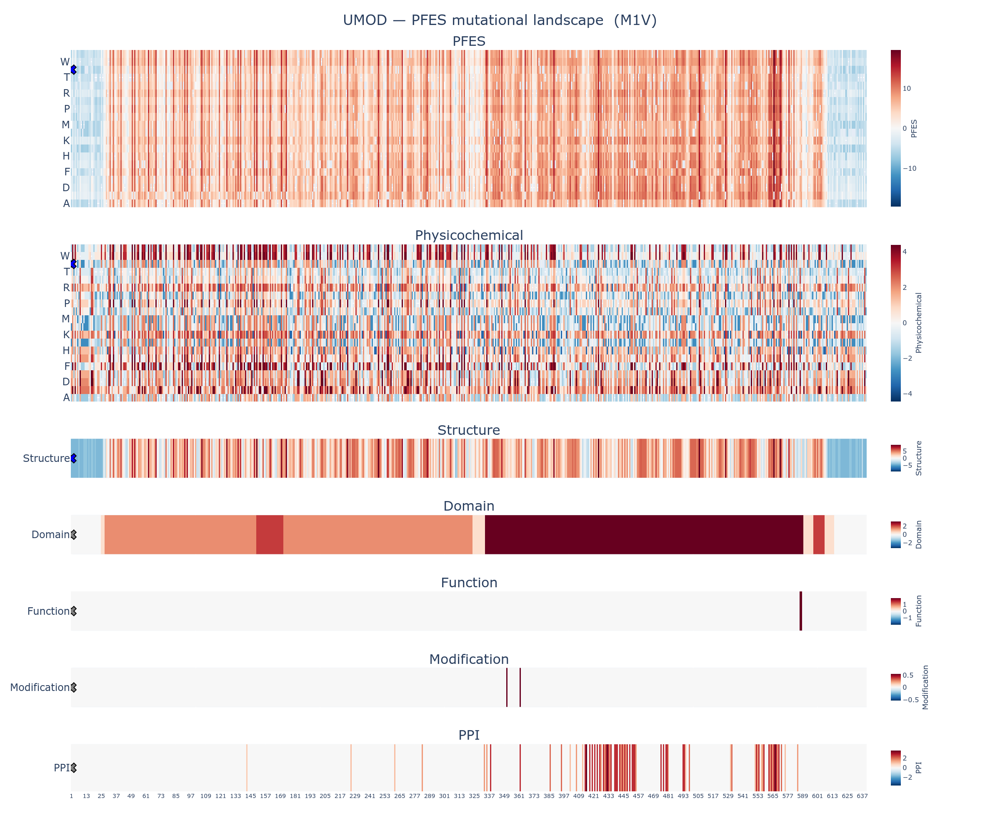

This report summarizes the protein feature enrichment score (PFES) for the variant M1V (Methionine to Valine at position 1) in UMOD, a member of the transmembrane signal receptor protein family.
| Overall PFES | -6.984 |
| PFES Category | PF-Depleted (p = 8.36e-01) |
| PFES_Physicochemical | -2.784 (Physicochemical-Depleted, p = 9.28e-01) |
| PFES_Structure | -4.200 (Structure-Depleted, p = 7.13e-01) |
| PFES_Domain | — (no significant features) |
| PFES_Function | — (no significant features) |
| PFES_Modification | — (no significant features) |
| PFES_PPI | — (no significant features) |
The variant M1V in UMOD is classified as PF-Depleted (p = 1.58e-02), indicating that its protein feature profile is depleted of features associated with pathogenic variants. This classification is primarily driven by structure features.
| Attribute | PFES | Feature | OR | q-value | Interpretation |
|---|---|---|---|---|---|
| Physicochemical | -2.784 | Reference residue class (Aliphatic) | 0.70 | 4.93e-20 | M1 is a aliphatic amino acid |
| Grantham distance = 21 (Mild) | 0.31 | 1.79e-182 | Mild physicochemical shift | ||
| Residue class change (Aliphatic → Aliphatic) | 0.28 | 9.72e-118 | Substitution class: Aliphatic → Aliphatic | ||
| Structure | -4.200 | Secondary structure (C, loop/coil) | 0.57 | 3.58e-36 | M1 adopts Secondary structure (C, loop/coil) conformation |
| AlphaFold2 confidence (Very low, pLDDT < 50) | 0.17 | 7.82e-171 | Very low AlphaFold2 prediction confidence | ||
| Solvent accessibility (Exposed, RSA > 75%) | 0.15 | 6.89e-120 | Residue is exposed (solvent accessibility) | ||
| Domain | — | — | — | — | No domain annotations identified at M1 |
| Function | — | — | — | — | No function annotations identified at M1 |
| Modification | — | — | — | — | No modification annotations identified at M1 |
| PPI | — | — | — | — | No ppi annotations identified at M1 |

The full mutational landscape for UMOD is available in the accompanying interactive figure: UMOD_M1V_landscape.html